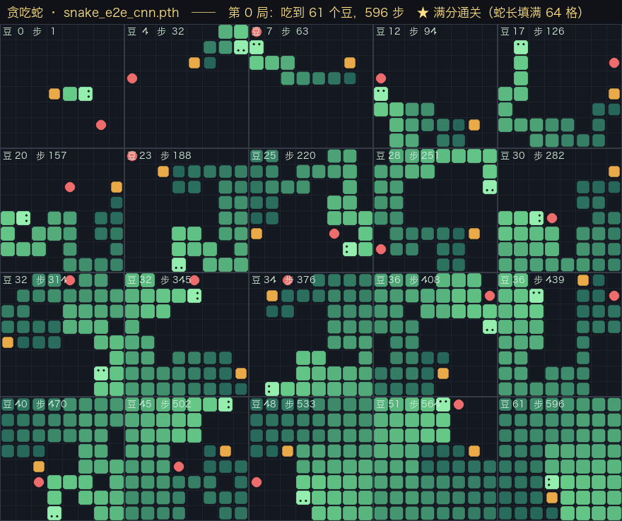
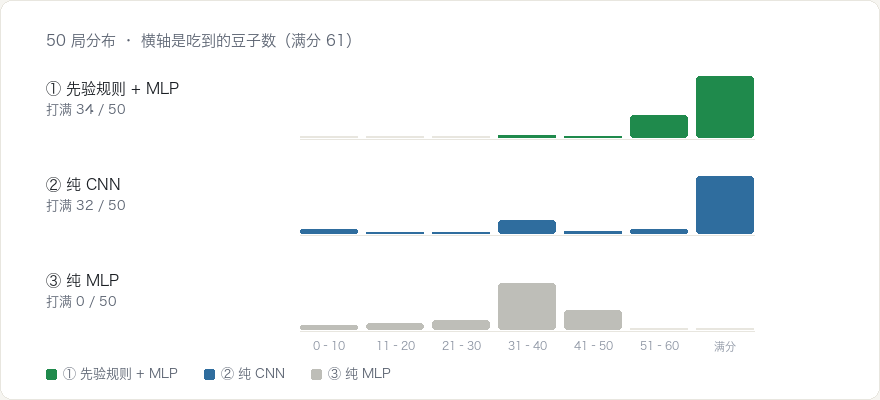
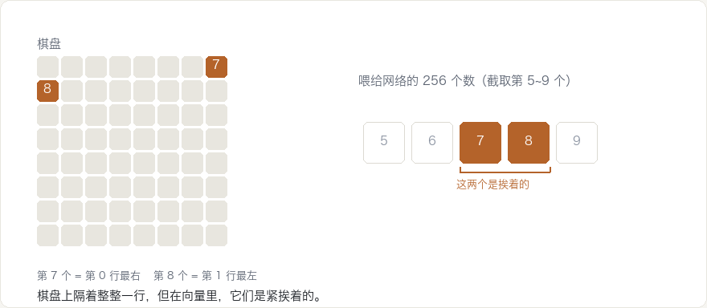

强化学习 · 一个对照实验
用强化学习来玩游戏
最近学习强化学习，就想到了不如用一个游戏来加深强化学习里的知识，所以就想到 贪吃蛇。
todo：github 地址
todo：在线体验的地址
任务：玩贪吃蛇，8×8 的棋盘。
目标：不告诉它规则。 不写「前面是墙就转弯」，也不写「朝豆子走」。 只有一个分数 —— 吃到豆 +1，撞死或饿死 −1。
过程：使用 PPO 算法，一直训练，直接收敛成一个稳定的策略。
| 是什么 | 说明 | |
|---|---|---|
| 状态 | 那 8×8 个格子 | 蛇在哪、豆在哪、朝哪边 |
| 动作 | 只有三个 | 左转 / 直行 / 右转 |
| 奖励 | +1 或 −1 | 吃到豆，或者死掉 |
一开始，让 AI 做了一份贪吃蛇的游戏，可以真人去玩，同时可以通过 API 拿到游戏状态和奖励，同时可以使用 API 去控制蛇的走动。 在此基础上想了三个方案来训练：
把棋盘上的信息写成 18 个数字喂进去。这 18 个数字分成两半：
6 个是直接从棋盘读出来的（不用计算）：
| 是什么 | |
|---|---|
| 食物在前还是在后 | 相对蛇头朝向 |
| 食物在左还是在右 | 同上，跟着朝向旋转 |
| 食物有多远 | 曼哈顿距离 |
| 有多饿 | 距离上次吃到豆走了多少步 |
| 蛇有多长 | 当前节数 |
| 头离尾巴多远 | 曼哈顿距离 |
12 个是人写程序算出来的规则 —— 4 组 × 3 个动作，每组都在问「如果我走这个动作，会怎样」：
| 问的问题 | 怎么算 | |
|---|---|---|
| 危险码 | 走这一步会立刻死吗 | 只看前面一格 |
| flood fill | 走完这一步，还剩多少空格可去 | 走一步 + 数连通块 |
| 2 步前瞻 | 走完再走一步，最差还剩多少 | 走两步 + 数连通块 |
| 蛇尾可达 | 走完这一步，还追得到自己的尾巴吗 | 走一步 + 找路 |
这些规则当然是人想出来的，也是人经过思考和经验积累总结出来的一些规则，我们都叫做 先验规则。
不给先验规则，给 4 张 8×8 的图：蛇身、蛇头、豆子、还剩多久饿死。用卷积网络接。
用卷积网络，就是因为卷积能保留「哪个格子在哪个位置」这个信息 —— 它拿一个小窗口在图上滑动， 等于告诉网络「相邻的格子是相关的」。
和 CNN 的训练方法一致，仅仅是把模型换成了纯的 MLP。
PS：同样 4 张图，但拉平成一串 256 个数再喂进去。信息一个没少，位置没了。
三种方案都训练了 400 轮 × 32 局 = 12,800 局，但花的时间和力气差很多：
| 方案 | 训练局数 | 训练步数 | 训练耗时 | 模型大小 |
|---|---|---|---|---|
| ① 先验规则 + MLP | 12,800 | 794 万 | 39 分钟 | 38 K |
| ② 纯 CNN | 12,800 | 431 万 | 3.3 小时 | 153 K |
| ③ 纯 MLP | 12,800 | 391 万 | 10 分钟 | 99 K |
耗时那列别直接比。 ② 跑在 GPU 上，①③ 跑在 CPU 上。换算到同一硬件，② 要 5~6 小时。
测试是 50 局、固定种子，所以三种方案面对的是同一批局面。

| 方案 | 平均豆 | 打满的局 | 没打满时平均拿多少 | 最差的一局 |
|---|---|---|---|---|
| ① 先验规则 + MLP | 59.1 | 34 / 50 | 55.1 | 37 |
| ② 纯 CNN | 50.8 | 32 / 50 | 32.7 | 2 |
| ③ 纯 MLP | 33.2 | 0 / 50 | 33.2 | 2 |
先看「打满的局」：① 和 ② 差不多，68% 对 64%，只差两局。 很容易得出「不给人工特征也行」—— 但这是错的。 差别在最后两列。

结论：
1. 先验规则 + MLP 和 纯 CNN，都可以完成任务；纯 MLP 暂时没有看到完成的机会。
2. 先验规则 + MLP 和 纯 CNN 虽然都能完成，但他们的成本是有差异的
1. 时间： 39 分钟 vs 3.3 小时 2. 特征：需要 vs 不需要
3. 纯 MLP，完全走不通的
4. 先验规则 + MLP 和 纯 CNN 继续训练，应该是会更加的准确
因为它没有位置信息。

因为结构对了。
棋盘本来就是二维格子，相邻的格子互相影响。卷积的先验正好对上这个对象。
它一条先验规则都没拿到，中位数却是满分，满分率和 ① 只差两局。
它内部还自己长出了人算过的东西。 把网络冻住去读它中间层的 128 个数， 「还剩多少空格」「追不追得到尾巴」这两个读出来的准确度有 0.95~0.97 —— 没人告诉过它「连通块」是什么。把那两个方向抹掉，它就从 50.8 崩到 20 出头。
看「你知不知道该看什么」。
① 在这个实验里几乎每一项都更好，但它靠的是人先把规则想出来了 —— 那 12 条规则搬不到别的任务上。
| 知不知道该看什么 | 选 |
|---|---|
| 知道 —— 棋盘、表格、传感器读数 | 先验规则 + MLP |
| 不知道 —— 原始画面、原始音频 | 纯 CNN |
任务多、经常变 → 端到端（特征设计的工作量会翻几十倍）。 只要一个、要稳 → 先验规则（① 没打满还能拿 55，② 最差只有 2）。
① 的卖点是更快更稳，② 的卖点是换个任务不用重来。